Introduction to Ecological Trajectory Analysis (ETA)
Miquel De Cáceres
2025-06-18
Source:vignettes/IntroductionETA.Rmd
IntroductionETA.Rmd1. Introduction
1.1 What is Ecological Trajectory Analysis?
Ecological Trajectory Analysis (ETA) is a framework to analyze the dynamics of ecological entities (e.g. individuals, communities or ecosystems). The key aspect of ETA is that dynamics are represented using trajectories in a chosen multivariate space (noted using ). These trajectories are then analyzed and compared geometrically.
The ETA framework was presented for community ecology in De Cáceres et al (2019), and was extended with new metrics and visualisation modes in Sturbois et al. (2021a). Procedures of trajectory analysis can be applied to data beyond community data tables. For example, the same framework was applied to stable isotope data in Sturbois et al. (2021b).
Since it can be applied to multiple target entities and multivariate spaces, we now refer to the framework as Ecological Trajectory Analysis and provide a package ecotraj that offers a set of functions to calculate metrics and produce plots.
1.2 About this vignette
In this vignette you will learn how to conduct ETA using different package functions. In most of the vignette we describe how to study the trajectories of three target entities (i.e. sites, individuals, communities, etc.) that have been surveyed four times each. We use a small data set where trajectories occur in a space of two dimensions, so that geometric calculations can be followed more easily. In the last section a real example is presented.
First of all, we load ecotraj:
## Loading required package: Rcpp2. Trajectory objects
2.1 Trajectory data
2.1.1 Trajectory data items
To specify dynamics of a set of target entities, the following data items need to be distinguished:
- A set of ecological states (i.e. coordinates in space ) implicitly described using a distance matrix .
- A character vector specifying the ecological entity (i.e. sampling unit, community, ecosystem or individual) corresponding to each ecological state. Trajectory names are identified from unique values of entities.
- An integer vector specifying the survey (i.e. census) corresponding to the observation of each ecological state. This vector is important for survey order. If not provided, the order will be assumed to be incremental for each repetition of entity value.
- A numeric vector specifying the survey time corresponding the observation of each ecological state. This is needed for some metrics such as trajectory speed.
In ETA, target entities do not need to be surveyed synchronously nor the same number of times.
2.1.2 Example data set
Let us first define the vectors that describe the ecological entity and the survey of each observation:
entities <- c("1","1","1","1","2","2","2","2","3","3","3","3")
surveys <- c(1,2,3,4,1,2,3,4,1,2,3,4)We then define a matrix whose coordinates correspond to the set of
ecological states observed. The number of rows in this matrix has to be
equal to the length of vectors entities and
surveys. For simplicity, we assume here that the ecological
state space
has two dimensions:
xy<-matrix(0, nrow=12, ncol=2)
xy[2,2]<-1
xy[3,2]<-2
xy[4,2]<-3
xy[5:6,2] <- xy[1:2,2]
xy[7,2]<-1.5
xy[8,2]<-2.0
xy[5:6,1] <- 0.25
xy[7,1]<-0.5
xy[8,1]<-1.0
xy[9:10,1] <- xy[5:6,1]+0.25
xy[11,1] <- 1.0
xy[12,1] <-1.5
xy[9:10,2] <- xy[5:6,2]
xy[11:12,2]<-c(1.25,1.0)
xy## [,1] [,2]
## [1,] 0.00 0.00
## [2,] 0.00 1.00
## [3,] 0.00 2.00
## [4,] 0.00 3.00
## [5,] 0.25 0.00
## [6,] 0.25 1.00
## [7,] 0.50 1.50
## [8,] 1.00 2.00
## [9,] 0.50 0.00
## [10,] 0.50 1.00
## [11,] 1.00 1.25
## [12,] 1.50 1.00The matrix of Euclidean distances between ecological states in is then:
d <- dist(xy)
d## 1 2 3 4 5 6 7
## 2 1.0000000
## 3 2.0000000 1.0000000
## 4 3.0000000 2.0000000 1.0000000
## 5 0.2500000 1.0307764 2.0155644 3.0103986
## 6 1.0307764 0.2500000 1.0307764 2.0155644 1.0000000
## 7 1.5811388 0.7071068 0.7071068 1.5811388 1.5206906 0.5590170
## 8 2.2360680 1.4142136 1.0000000 1.4142136 2.1360009 1.2500000 0.7071068
## 9 0.5000000 1.1180340 2.0615528 3.0413813 0.2500000 1.0307764 1.5000000
## 10 1.1180340 0.5000000 1.1180340 2.0615528 1.0307764 0.2500000 0.5000000
## 11 1.6007811 1.0307764 1.2500000 2.0155644 1.4577380 0.7905694 0.5590170
## 12 1.8027756 1.5000000 1.8027756 2.5000000 1.6007811 1.2500000 1.1180340
## 8 9 10 11
## 2
## 3
## 4
## 5
## 6
## 7
## 8
## 9 2.0615528
## 10 1.1180340 1.0000000
## 11 0.7500000 1.3462912 0.5590170
## 12 1.1180340 1.4142136 1.0000000 0.5590170ETA is based on the analysis of information in the distance matrix . Therefore, it does not require explicit coordinates. This is an advantage because it allows the analysis to be conducted on arbitrary metric (or semi-metric) spaces. The choice of is left to the user and will depend on the problem at hand.
2.2 Defining trajectories
To perform ETA, we need to combine the distance matrix and the
entity/survey information in a single object using function
defineTrajectories():
x <- defineTrajectories(d, entities, surveys)Note that surveys may be omitted, and in this case
surveys for each entity are assumed to be ordered. The function returns
an object (a list) of class trajectories that contains all
the information for analysis:
class(x)## [1] "trajectories" "list"This object contains two elements:
names(x)## [1] "d" "metadata"Element d contains the input distance matrix, whereas
metadata is a data frame including information of
observations:
x$metadata## sites surveys times
## 1 1 1 1
## 2 1 2 2
## 3 1 3 3
## 4 1 4 4
## 5 2 1 1
## 6 2 2 2
## 7 2 3 3
## 8 2 4 4
## 9 3 1 1
## 10 3 2 2
## 11 3 3 3
## 12 3 4 4Column sites identifies the ecological entities (calling
them sites is an inherited notation from the original
framework of community trajectory analysis). Note that columns
surveys and times have exactly the same
values. This happens because we did not supplied a vector for
times so that surveys are assumed to happen every time step
(of whatever units). Moreover, the surveys vector itself
can be omitted in calls to defineTrajectories(). If so, the
function will (correctly, in this case) interpret that every repetition
of a given entity corresponds to a new survey:
x <- defineTrajectories(d, entities)
x$metadata## sites surveys times
## 1 1 1 1
## 2 1 2 2
## 3 1 3 3
## 4 1 4 4
## 5 2 1 1
## 6 2 2 2
## 7 2 3 3
## 8 2 4 4
## 9 3 1 1
## 10 3 2 2
## 11 3 3 3
## 12 3 4 4Let us assume the following sampling times, in units of years:
times <- c(1.0,2.2,3.1,4.2,1.0,1.5,2.8,3.9,1.6,2.8,3.9,4.3)The call to defineTrajectories() using all the
information would be:
xt <- defineTrajectories(d, entities, surveys, times)
xt$metadata## sites surveys times
## 1 1 1 1.0
## 2 1 2 2.2
## 3 1 3 3.1
## 4 1 4 4.2
## 5 2 1 1.0
## 6 2 2 1.5
## 7 2 3 2.8
## 8 2 4 3.9
## 9 3 1 1.6
## 10 3 2 2.8
## 11 3 3 3.9
## 12 3 4 4.3Note that in x all entities have been surveyed in the
exact same times. The resulting trajectories are called
synchronous. In contrast, in xt the
entities have been surveyed at different times, so that trajectories are
non-synchronous. In the following, we will use
xt whenever this distinction is relevant.
2.3 Subsetting trajectories
At some point in the ETA, one may desire to focus on particular
trajectories or surveys. Function subsetTrajectory() allows
subsetting objects of class trajectories, For example, we
can decide to work with the trajectories of the second and third
entities (sites):
x23 <- subsetTrajectories(x, site_selection = c("2", "3"))
x23## $d
## 1 2 3 4 5 6 7
## 2 1.0000000
## 3 1.5206906 0.5590170
## 4 2.1360009 1.2500000 0.7071068
## 5 0.2500000 1.0307764 1.5000000 2.0615528
## 6 1.0307764 0.2500000 0.5000000 1.1180340 1.0000000
## 7 1.4577380 0.7905694 0.5590170 0.7500000 1.3462912 0.5590170
## 8 1.6007811 1.2500000 1.1180340 1.1180340 1.4142136 1.0000000 0.5590170
##
## $metadata
## sites surveys times
## 1 2 1 1
## 2 2 2 2
## 3 2 3 3
## 4 2 4 4
## 5 3 1 1
## 6 3 2 2
## 7 3 3 3
## 8 3 4 4
##
## attr(,"class")
## [1] "trajectories" "list"We can decide to focus on the last three surveys:
x23s <- subsetTrajectories(x,
site_selection = c("2", "3"),
survey_selection = c(2, 3, 4))
x23s## $d
## 1 2 3 4 5
## 2 0.5590170
## 3 1.2500000 0.7071068
## 4 0.2500000 0.5000000 1.1180340
## 5 0.7905694 0.5590170 0.7500000 0.5590170
## 6 1.2500000 1.1180340 1.1180340 1.0000000 0.5590170
##
## $metadata
## sites surveys times
## 1 2 1 2
## 2 2 2 3
## 3 2 3 4
## 4 3 1 2
## 5 3 2 3
## 6 3 3 4
##
## attr(,"class")
## [1] "trajectories" "list"You will notice that surveys have been renumbered (but
original times are not modified). This illustrates that the
vector surveys is only used to indicate the survey order
within each trajectory.
2.4 Displaying trajectories
To begin our analysis of the three trajectories, we display them in
an ordination space, using function trajectoryPCoA(). Since
has only two dimensions in this example, the Principal Coordinates
Analysis (PCoA) on
displays the complete space:
trajectoryPCoA(x, traj.colors = c("black","red", "blue"), lwd = 2,
survey.labels = T)
legend("topright", col=c("black","red", "blue"),
legend=c("Entity 1", "Entity 2", "Entity 3"), bty="n", lty=1, lwd = 2)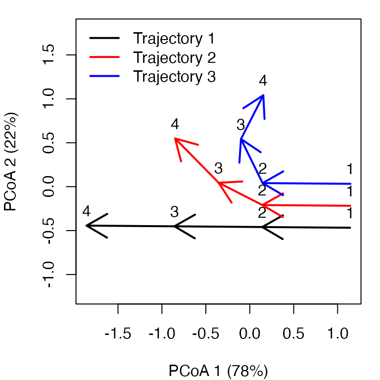
While trajectory of entity ‘1’ (black arrows) is made of three segments of the same length and direction, trajectory of entity ‘2’ (red arrows) has a second and third segments that bend and are shorter than that of the second segment of entity ‘1’. Trajectory of entity ‘3’ includes a stronger change in direction and shorter segments.
As this example has two dimensions and we used Euclidean distance,
the same plot (albeit rotated) can be straightforwardly obtained using
matrix xy and function trajectoryPlot():
trajectoryPlot(xy, entities, surveys, traj.colors = c("black","red", "blue"), lwd = 2,
survey.labels = T)
legend("topright", col=c("black","red", "blue"),
legend=c("Entity 1", "Entity 2", "Entity 3"), bty="n", lty=1, lwd = 2)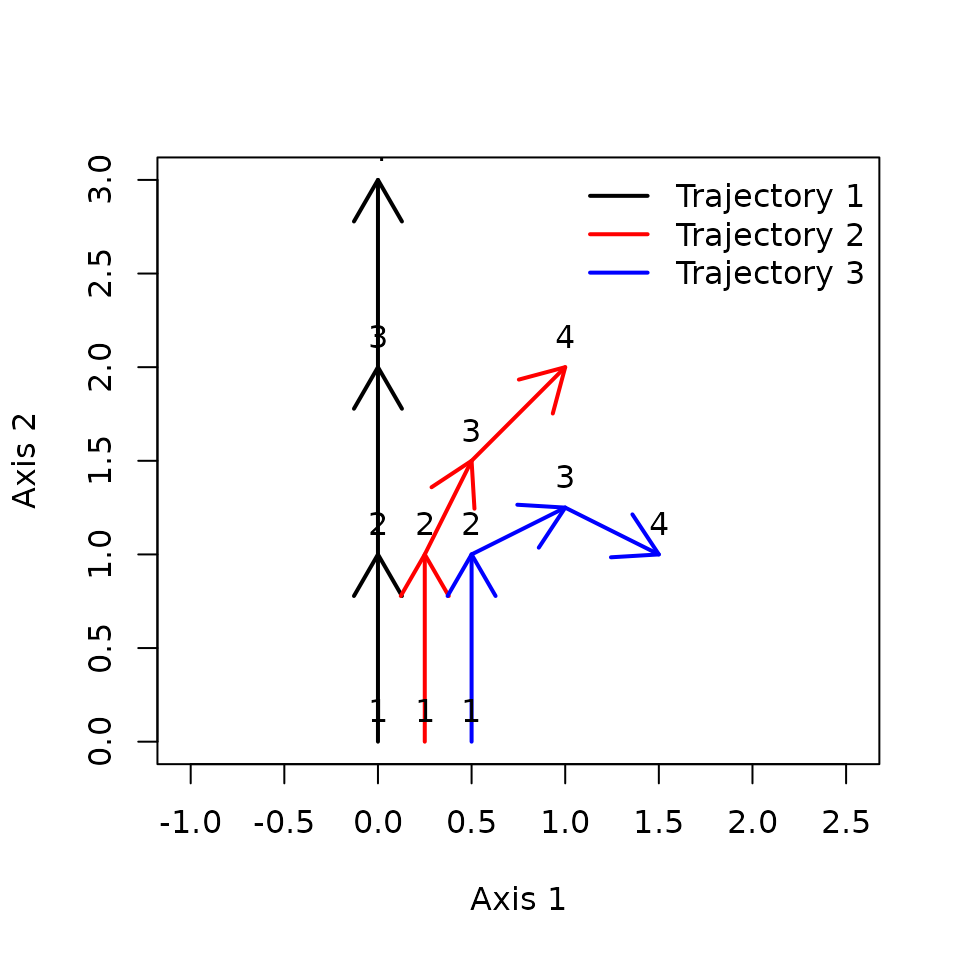
While trajectoryPCoA() uses PCoA (also known as
classical Multidimensional Scaling) to display trajectories, users can
display ecosystem trajectories using other ordination techniques such as
metric Multidimensional Scaling (mMDS; see function mds of
package smacof) or non-metric MDS (nMDS; see function
metaMDS in package vegan or function
isoMDS in package MASS). Function
trajectoryPlot() will help drawing arrows between segments
to represent trajectories on the ordination space given by any of these
methods.
Functions trajectoryPCoA()and
trajectoryPlot() can be used to display a subset of
trajectories if we combine them with function
subsetTrajectories():
trajectoryPCoA(subsetTrajectories(x, site_selection = c("2", "3")),
traj.colors = c("red", "blue"), lwd = 2,
survey.labels = T)
legend("topright", col=c("red", "blue"),
legend=c("Entity 2", "Entity 3"), bty="n", lty=1, lwd = 2)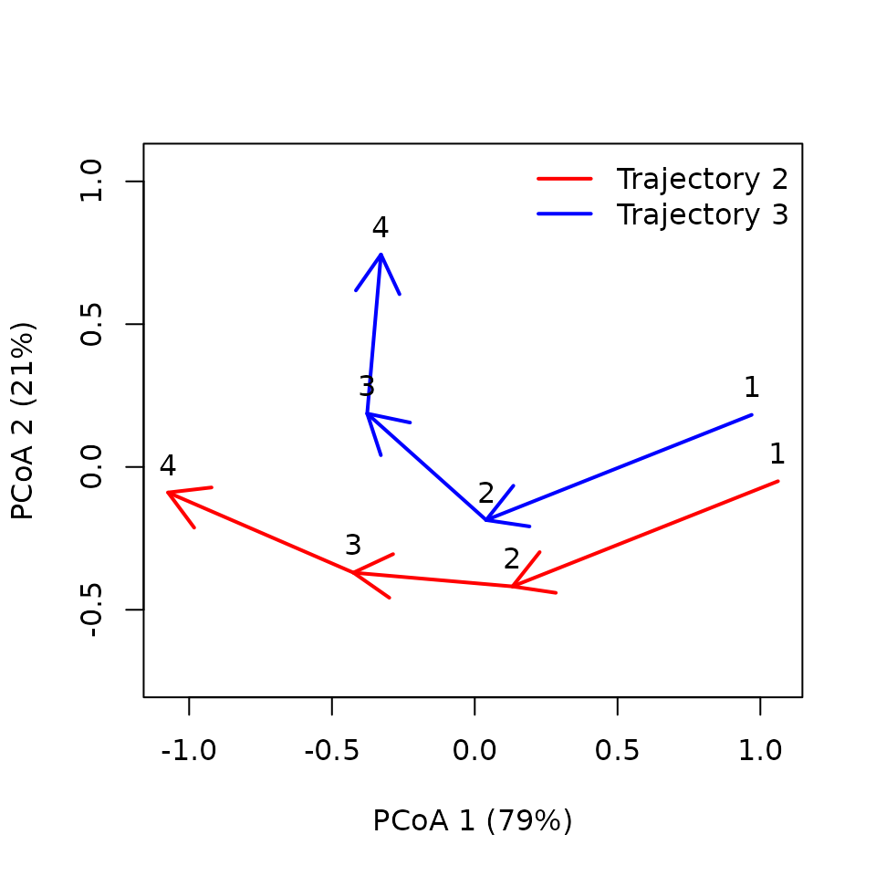
3. Trajectory metrics
One may be interested in studying the geometric properties of particular trajectories. This is illustrated in this section
3.1 Changes in ecological state
Several metrics are related to the magnitude of temporal changes in
state. For example, one can obtain the length of trajectory segments and
the total path length using function
trajectoryLengths():
## S1 S2 S3 Path
## 1 1 1.000000 1.0000000 3.000000
## 2 1 0.559017 0.7071068 2.266124
## 3 1 0.559017 0.5590170 2.118034Since the difference between x and xt is in
observation times, we will obtain the same result when calculating
lengths on xt:
## S1 S2 S3 Path
## 1 1 1.000000 1.0000000 3.000000
## 2 1 0.559017 0.7071068 2.266124
## 3 1 0.559017 0.5590170 2.118034When observation times are available, it may be of interest to
calculate segment or trajectory speeds. One can obtain the speed of
trajectory segments and the total path speed using function
trajectorySpeeds():
## S1 S2 S3 Path
## 1 1 1.000000 1.0000000 1.0000000
## 2 1 0.559017 0.7071068 0.7553746
## 3 1 0.559017 0.5590170 0.7060113Note that the units of lengths and speeds will depend on the
definition of the
space and, in the latter case, on the units of times.
Trajectory speeds are affected by observation times and, since in
x times are consecutive integers, segment speeds are equal
to segment lengths (but not the average trajectory speed). We will
obtain a different result for speeds with xt:
trajectorySpeeds(xt)## S1 S2 S3 Path
## 1 0.8333333 1.1111111 0.9090909 0.937500
## 2 2.0000000 0.4300131 0.6428243 0.781422
## 3 0.8333333 0.5081973 1.3975425 0.784457Finally, one may calculate the internal variation of states within
each trajectory using trajectoryInternalVariation():
## ss_1 ss_2 ss_3 ss_4 internal_ss internal_variance
## 1 2.2500000 0.2500000 0.2500000 2.2500000 5.000000 1.6666667
## 2 1.3281250 0.0781250 0.1406250 1.0156250 2.562500 0.8541667
## 3 0.8007812 0.1757812 0.2070312 0.4257813 1.609375 0.5364583The function returns the (absolute or relative) contribution of each observation to the internal variation, the total sum of squares and an unbiased estimation of internal variance. Note that in this example the third (more curved) trajectory has lower internal variation, compared to the first and second (straighter) ones.
3.2 Changes in direction
In CTA, angles are measured using triplets of time-ordered ecological
states (a pair of consecutive segments is an example of such triplets).
As matrix
may represent a space
of multiple dimensions, angles cannot be calculated with respect to a
single plane. Instead, each angle is measured on the plane defined by
each triplet. Zero angles indicate that the three points (e.g. the two
consecutive segments) are in a straight line. The larger the angle
value, the more is trajectory changing in direction. Mean and standard
deviation statistics of angles are calculated according to circular
statistics. Function trajectoryAngles() allows calculating
the angles between consecutive segments:
## S1-S2 S2-S3 mean sd rho
## 1 0.00000 0.00000 0.00000 0.00000000 1.0000000
## 2 26.56505 18.43495 22.50000 0.07097832 0.9974842
## 3 63.43495 53.13010 58.28253 0.08998746 0.9959593While entity ‘1’ follows a straight path, angles are > 0 for
trajectories of entity ‘2’ and ‘3’, denoting the change in direction. In
this case, the same information could be obtained by inspecting the
previous plots, but in a case where
has many dimensions, the representation will correspond to a reduced
(ordination) space and hence, angles and lengths in the plot will not
correspond exactly to those of functions
trajectoryLengths() and trajectoryAngles(),
which take into account the complete
space.
Angles can be calculated not only for all consecutive segments but
for all four triplets of ordered ecological states, whether of
consecutive segments or not (i.e., between points 1-2-3, 1-2-4, 1-3-4
and 2-3-4). This is done by specifying all=TRUE in
trajectoryAngles():
trajectoryAngles(x, all=TRUE)## A1 A2 A3 A4 mean sd rho
## 1 0.00000 0.0000 0.00000 0.00000 0.00000 0.0000000 1.0000000
## 2 26.56505 36.8699 35.53768 18.43495 29.36033 0.1300790 0.9915754
## 3 63.43495 90.0000 94.76364 53.13010 75.36015 0.3078934 0.9537066The mean resultant length of circular statistics (column
rho of the previous result), which takes values between 0
and 1, can be used to assess the degree of homogeneity of angle values
and it will take a value of 1 if all angles are the same. This approach,
however, uses only angular information and does not take into account
the length of segments.
To measure the overall directionality of an ecosystem trajectory
(i.e. if the path consistently follows the same direction in
), we recommend using another statistic that is sensitive to both angles
and segment lengths and is implemented in function
trajectoryDirectionality():
## 1 2 3
## 1.0000000 0.8274026 0.5620859As known from previous plots, trajectory of entity ‘2’ is less straight than trajectory of entity ‘1’ and that of entity ‘3’ has the lowest directionality value. By default the function only computes a descriptive statistic, i.e. it does not perform any statistical test on directionality. A permutational test can be performed, but this feature is experimental and needs to be tested before recommendation.
3.2 Assessing multiple metrics at once
It is possible to assess multiple trajectory metrics in one function
call to trajectoryMetrics(). This will only provide metrics
that apply to the whole trajectory path:
## trajectory n t_start t_end duration length mean_speed mean_angle
## 1 1 4 1 4 3 3.000000 1.0000000 0.00000
## 2 2 4 1 4 3 2.266124 0.7553746 22.50000
## 3 3 4 1 4 3 2.118034 0.7060113 58.28253
## directionality internal_ss internal_variance
## 1 1.0000000 5.000000 1.6666667
## 2 0.8274026 2.562500 0.8541667
## 3 0.5620859 1.609375 0.5364583If we calculate metrics on xt we will confirm that only
trajectory speeds are affected by observation times:
## trajectory n t_start t_end duration length mean_speed mean_angle
## 1 1 4 1.0 4.2 3.2 3.000000 0.937500 0.00000
## 2 2 4 1.0 3.9 2.9 2.266124 0.781422 22.50000
## 3 3 4 1.6 4.3 2.7 2.118034 0.784457 58.28253
## directionality internal_ss internal_variance
## 1 1.0000000 5.000000 1.6666667
## 2 0.8274026 2.562500 0.8541667
## 3 0.5620859 1.609375 0.5364583Another function, called trajectoryWindowMetrics()
calculates trajectory metrics on moving windows over trajectories, but
will not be illustrated here.
4. Comparing trajectories
4.1 Relative positions within trajectories
Ecological states occupy a position within their trajectory that
depends on the total path length of the trajectory (see Fig. 2 of De
Cáceres et al. 2019). By adding the length of segments prior to a given
state and dividing the sum by the total length of the trajectory we
obtain the relative position of the ecological state. Function
trajectoryProjection() allows obtaining the relative
position of each ecological state of a trajectory. To use it for this
purpose one should use as parameters the distance matrix between states
and the indices that conform the trajectory, which have to be entered
twice. For example for the two example trajectories we would have:
trajectoryProjection(d, 1:4, 1:4)## distanceToTrajectory segment relativeSegmentPosition
## 1 0 1 0
## 2 0 1 1
## 3 0 2 1
## 4 0 3 1
## relativeTrajectoryPosition
## 1 0.0000000
## 2 0.3333333
## 3 0.6666667
## 4 1.0000000If we inspect the relative positions of the points in the trajectory of entity ‘2’, we find than the second and third segments have relative positions larger than 1/3 and 2/3, respectively, because the second and third segments are shorter:
trajectoryProjection(d, 5:8, 5:8)## distanceToTrajectory segment relativeSegmentPosition
## 5 0 1 0
## 6 0 1 1
## 7 0 2 1
## 8 0 3 1
## relativeTrajectoryPosition
## 5 0.0000000
## 6 0.4412822
## 7 0.6879664
## 8 1.0000000Function trajectoryProjection() can also be used to
perform an orthogonal projection of arbitrary
ecological states onto a given reference trajectory. For example we can
study the projection of third state of the trajectory of entity ‘2’
(i.e. state 7) onto the trajectory of entity ‘1’ (i.e. states 1 to 4),
which happens to be in the half of the trajectory:
trajectoryProjection(d, 7, 1:4)## distanceToTrajectory segment relativeSegmentPosition
## 7 0.5 2 0.5
## relativeTrajectoryPosition
## 7 0.5If we project the points of the trajectory of entity ‘3’ onto the trajectory of entity ‘1’ we see how the curved path of entity ‘3’ projects its fourth point to the same relative position as its second point.
trajectoryProjection(d, 9:12, 1:4)## distanceToTrajectory segment relativeSegmentPosition
## 9 0.5 1 0.00
## 10 0.5 2 0.00
## 11 1.0 2 0.25
## 12 1.5 1 1.00
## relativeTrajectoryPosition
## 9 0.0000000
## 10 0.3333333
## 11 0.4166667
## 12 0.33333334.2 Trajectory shifts
Sometimes different entities follow the same or similar trajectory
but with different speeds, or with an observations starting at a
different point in the dynamic sequence. We can quantify those
differences using function trajectoryShifts(), which
internally uses orthogonal projection. To illustrate this function, we
will first build a small data set of three linear trajectories, but
where the second and the third are modified:
#Description of entities and times
entities3 <- c("1","1","1","1","2","2","2","2","3","3","3","3")
times3 <- c(1,2,3,4,1,2,3,4,1,2,3,4)
#Raw data table
xy3<-matrix(0, nrow=12, ncol=2)
xy3[2,2]<-1
xy3[3,2]<-2
xy3[4,2]<-3
xy3[5:8,1] <- 0.25
xy3[5:8,2] <- xy3[1:4,2] + 0.5 # States are all shifted with respect to entity "1"
xy3[9:12,1] <- 0.5
xy3[9:12,2] <- xy3[1:4,2]*1.25 # 1.25 times faster than entity "1"We can see the differences graphically:
trajectoryPlot(xy3, entities3,
traj.colors = c("black","red", "blue"), lwd = 2)
legend("topright", col=c("black","red", "blue"),
legend=c("Trajectory 1", "Trajectory 2", "Trajectory 3"), bty="n", lty=1, lwd = 2)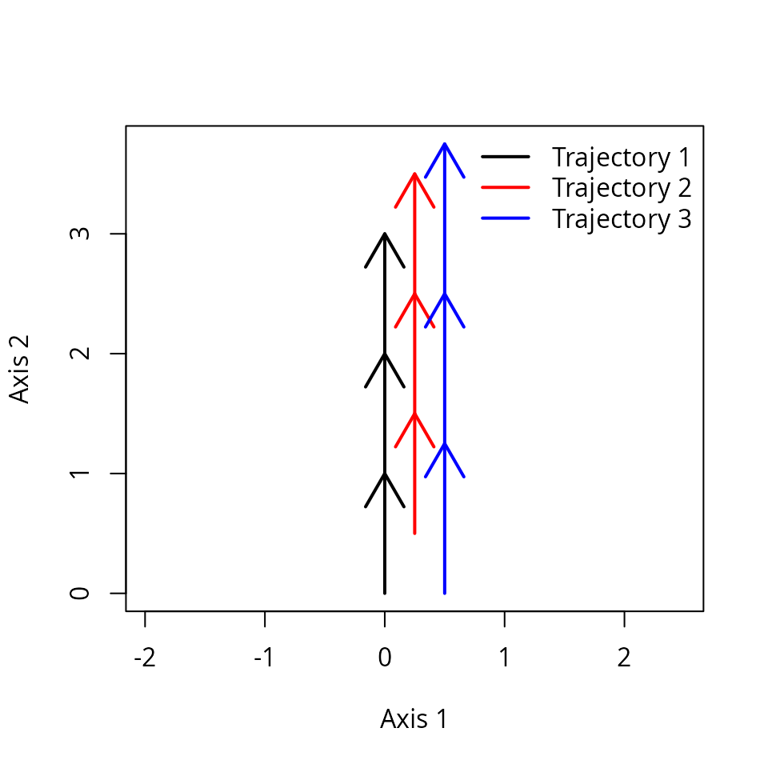
We now build the usual trajectories object:
x3 <- defineTrajectories(dist(xy3), entities3, times = times3)We can check that indeed the third trajectory is faster using:
trajectorySpeeds(x3)## S1 S2 S3 Path
## 1 1.00 1.00 1.00 1.00
## 2 1.00 1.00 1.00 1.00
## 3 1.25 1.25 1.25 1.25Function trajectoryShifts() allows comparing different
observations to a reference trajectory. For example we can compare
trajectory for entities “1” and “2”:
trajectoryShifts(subsetTrajectories(x3, c("1","2")))## reference site survey time timeRef shift
## 1 1 2 1 1 1.5 0.5
## 2 1 2 2 2 2.5 0.5
## 3 1 2 3 3 3.5 0.5
## 4 1 2 4 4 NA NA
## 5 2 1 1 1 NA NA
## 6 2 1 2 2 1.5 -0.5
## 7 2 1 3 3 2.5 -0.5
## 8 2 1 4 4 3.5 -0.5Where we see that the observations of trajectory “2” correspond to states of trajectory “1” at 0.5 time units later in time. Surveys with missing values indicate that the projection of the target state cannot be determined (because the reference trajectory is too short).
We can also compare trajectories “1” and “3”:
trajectoryShifts(subsetTrajectories(x3, c("1","3")))## reference site survey time timeRef shift
## 1 1 3 1 1 1.00 0.00
## 2 1 3 2 2 2.25 0.25
## 3 1 3 3 3 3.50 0.50
## 4 1 3 4 4 NA NA
## 5 3 1 1 1 1.00 0.00
## 6 3 1 2 2 1.80 -0.20
## 7 3 1 3 3 2.60 -0.40
## 8 3 1 4 4 3.40 -0.60Here we see that shifts increase progressively, indicating the faster speed of trajectory “3”.
4.3 Trajectory convergence/divergence
When trajectories are synchronous, one can study their symmetric
convergence or divergence (see Fig. 3a of De Cáceres et al. 2019).
Function trajectoryConvergence() allows performing tests of
convergence based on the trend analysis of the sequences of distances
between points of the two trajectories (i.e. first-first, second-second,
…):
trajectoryConvergence(x, type = "pairwise.symmetric")## $tau
## 1 2 3
## 1 NA 0.9128709 0.9128709
## 2 0.9128709 NA 0.9128709
## 3 0.9128709 0.9128709 NA
##
## $p.value
## 1 2 3
## 1 NA 0.1485617 0.1485617
## 2 0.1485617 NA 0.1485617
## 3 0.1485617 0.1485617 NAThe function performs the Mann-Whitney trend test. Values of the
statistic (‘tau’) larger than 0 correspond to trajectories that are
diverging, whereas values lower than 0 correspond to trajectories that
are converging. By setting type = "pairwise.asymmetric" the
convergence test becomes asymmetric (see Figs. 3b and 3c of De Cáceres
et al. 2019). In this case the sequence of distances between every
point of one trajectory and the other:
trajectoryConvergence(x, type = "pairwise.asymmetric")## $tau
## 1 2 3
## 1 NA 0.9128709 0.9128709
## 2 0.9128709 NA 0.9128709
## 3 0.9128709 0.9128709 NA
##
## $p.value
## 1 2 3
## 1 NA 0.1485617 0.1485617
## 2 0.1485617 NA 0.1485617
## 3 0.1485617 0.1485617 NAThe asymmetric test is useful to determine if one trajectory is
becoming closer to the other or if it is departing from the other. The
asymmetric test can be applied on non-synchronous trajectories. Finally,
if the trajectories have been surveyed synchronously, one can also
perform a global test of convergence/divergence between trajectories,
using type = "multiple":
trajectoryConvergence(x, type = "multiple")## $tau
## [1] 0.9128709
##
## $p.value
## [1] 0.1485617In this case we are testing whether the average distance between ecological states corresponding to the same observation time is increasing or decreasing with time. In all these tests trajectories are diverging (as indicated by the positive tau values) but the tests are not statistically significance due to the small number of surveys.
4.4 Distances between segments and between trajectories
The ETA framework allows quantifying the resemblance in the dynamics
of target entities by assessing the dissimilarity of their corresponding
trajectories. Broadly speaking, dissimilarity between trajectories will
be influenced both by differences in ecological states that are constant
in time and differences that arise from temporal changes. To focus on
the second, distances between trajectories can be calculated after
centering them (i.e. after bringing all trajectories to the center of
the
space). This is done using function centerTrajectories(),
which returns a new dissimilarity matrix and is illustrated in article
“Transforming trajectories”.
4.4.1 Distances between segments
For some trajectory dissimilarity coefficients, one intermediate step
is the calculation of distances between directed segments (see Fig. 4 of
De Cáceres et al. 2019), which can be obtained by calling function
segmentDistances:
Ds <- segmentDistances(x)$Dseg
Ds## 1[1-2] 1[2-3] 1[3-4] 2[1-2] 2[2-3] 2[3-4] 3[1-2]
## 1[2-3] 1.0000000
## 1[3-4] 2.0000000 1.0000000
## 2[1-2] 0.2500000 1.0307764 2.0155644
## 2[2-3] 1.0307764 0.7071068 1.5811388 1.0000000
## 2[3-4] 1.5811388 1.0000000 1.4142136 1.5206906 0.7071068
## 3[1-2] 0.5000000 1.1180340 2.0615528 0.2500000 1.0307764 1.5000000
## 3[2-3] 1.1180340 1.1180340 2.0124612 1.0307764 0.5590170 0.7500000 1.0000000
## 3[3-4] 1.6007811 1.5590170 2.0155644 1.4577380 1.1180340 1.0606602 1.5590170
## 3[2-3]
## 1[2-3]
## 1[3-4]
## 2[1-2]
## 2[2-3]
## 2[3-4]
## 3[1-2]
## 3[2-3]
## 3[3-4] 0.5590170Distances between segments are affected by differences in both
position, size and direction. Hence, among
the six segments of this example, the distance is maximum between the
last segment of trajectory ‘1’ (named 1[3-4]) and the first
segment of trajectory ‘3’ (named 3[1-2]).
One can display distances between segments in two dimensions using mMDS.
mMDS <- smacof::mds(Ds)
mMDS##
## Call:
## smacof::mds(delta = Ds)
##
## Model: Symmetric SMACOF
## Number of objects: 9
## Stress-1 value: 0.062
## Number of iterations: 15
xret <- mMDS$conf
plot(xret, xlab="axis 1", ylab = "axis 2", asp=1, pch=21,
bg=c(rep("black",3), rep("red",3), rep("blue",3)),
xlim=c(-1.5,1), ylim=c(-1,1.5))
text(xret, labels=rep(paste0("s",1:3),3), pos=1)
legend("topleft", pt.bg=c("black","red","blue"), pch=21, bty="n", legend=c("Trajectory 1", "Trajectory 2", "Trajectory 3"))
4.4.2 Distances between trajectories
Distances between segments are internally calculated when comparing
whole trajectories using function trajectoryDistances().
Here we show the dissimilarity between the two trajectories as assessed
using either the Hausdorff distance (equal to the maximum
distance between directed segments; see eq. 8 in De Cáceres et
al. 2019), the segment path distance (Besse et al, 2016), the
directed segment path distance (see eq. 13 in De Cáceres et
al. 2019) or the time-sensitive path distance
(unpublished):
trajectoryDistances(x, distance.type = "Hausdorff")## 1 2
## 2 2.015564
## 3 2.061553 1.500000
trajectoryDistances(x, distance.type = "SPD")## 1 2
## 2 0.5776650
## 3 0.9538119 0.4702263
trajectoryDistances(x, distance.type = "DSPD")## 1 2
## 2 0.7214045
## 3 1.1345910 0.5714490
trajectoryDistances(x, distance.type = "TSPD")## 1 2
## 2 0.6553301
## 3 1.1875000 0.5442627SPD, DSPD and TSPD are symmetrized by default. To calculate non-symmetric distances one uses, for example (see eq. 11 in De Cáceres et al. 2019):
trajectoryDistances(x, distance.type = "DSPD", symmetrization = NULL)## 1 2 3
## 1 0.0000000 0.7904401 1.2101651
## 2 0.6523689 0.0000000 0.5196723
## 3 1.0590170 0.6232257 0.0000000A detailed comparison of trajectory dissimilarity indices can be found in article “Distance metrics for trajectory resemblance”.
When estimating dissimilarities between a set of trajectories one is building a new space (noted as ). One can display the location of trajectories in two dimensions using mMDS.
mMDS <- smacof::mds(trajectoryDistances(x, distance.type = "TSPD"))
mMDS##
## Call:
## smacof::mds(delta = trajectoryDistances(x, distance.type = "TSPD"))
##
## Model: Symmetric SMACOF
## Number of objects: 3
## Stress-1 value: 0
## Number of iterations: 1
xret <- mMDS$conf
plot(xret, xlab="axis 1", ylab = "axis 2", asp=1, pch=21,
bg=c("black", "red", "blue"),
xlim=c(-1.0,1), ylim=c(-1,1.0))
legend("topleft", pt.bg=c("black","red","blue"), pch=21, bty="n", legend=c("Trajectory 1", "Trajectory 2", "Trajectory 3"))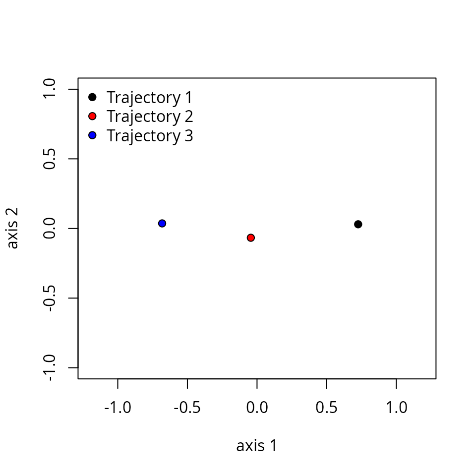
4.5 Dynamic variation
One may be interested in knowing how much diverse are a set of
trajectories, and which entities follow dynamics more distinct from
others. We refer to the diversity of trajectories as dynamic
variation., and these questions can be addressed using function
dynamicVariation(), for example:
## $dynamic_ss
## [1] 0.7114251
##
## $dynamic_variance
## [1] 0.3557125
##
## $relative_contributions
## 1 2 3
## 0.51366204 0.06351261 0.42282535Analogously to trajectoryInternalVariation(), function
dynamicVariation() returns the sum of squares of dynamic
variation, an unbiased dynamic variance estimator and the relative
contribution of individual trajectories to the overall sum of squares.
Function dynamicVariation(), makes internal calls to
trajectoryDistances(), which means that we may get slightly
different results if we change the trajectory dissimilarity
coefficient:
dynamicVariation(x, distance.type = "TSPD")## $dynamic_ss
## [1] 0.7119452
##
## $dynamic_variance
## [1] 0.3559726
##
## $relative_contributions
## 1 2 3
## 0.527975317 0.006430374 0.4655943095. Real example: structural dynamics in permanent plots
In this example we analyze the dynamics of 8 permanent forest plots located on slopes of a valley in the New Zealand Alps. The study area is mountainous and centered on the Craigieburn Range (Southern Alps), South Island, New Zealand (see map in Fig. 8 of De Cáceres et al. 2019). Forests plots are almost monospecific, being the mountain beech (Fuscospora cliffortioides) the main dominant tree species. Previously forests consisted of largely mature stands, but some of them were affected by different disturbances during the sampling period (1972-2009) which includes 9 surveys. We begin our example by loading the data set, which includes 72 plot observations:
data("avoca")Community data is in form of an object
stratifiedvegdata. To account for differences in tree
diameter, while emphasizing regeneration, the data contains individual
counts to represent tree abundance and trees are classified in 19
quadratic diameter bins (in cm): {(2.25, 4], (4, 6.25], (6.25, 9], …
(110.25, 121]}. The data set also includes vectors
avoca_surveys and avoca_sites that indicate
the survey and forest plot corresponding to each forest state.
Before starting ETA, we have to use function
vegdiststruct from package vegclust to
calculate distances between forest plot states in terms of structure and
composition (see De Cáceres M, Legendre P, He F (2013) Dissimilarity
measurements and the size structure of ecological communities. Methods
Ecol Evol 4:1167–1177. https://doi.org/10.1111/2041-210X.12116):
avoca_D_man <- vegclust::vegdiststruct(avoca_strat,
method="manhattan",
transform = function(x){log(x+1)})Distances in avoca_D_man are calculated using the
Manhattan metric, after applying a logarithm transformation to abundance
data.
5.1 Defining trajectories
We start by defining our trajectories, which implies combining the information about distances, entities (sites) and observation times. The nine surveys were conducted in years 1970/72, 1974, 1978, 1983, 1987, 1993, 1999, 2004 and 2009. Since plots have been surveyed rather synchronously, we can define observation times using:
years <- c(1971, 1974, 1978, 1983, 1987, 1993, 1999, 2004, 2009)
avoca_times <- years[avoca_surveys]And then define trajectories using:
avoca_x <- defineTrajectories(d = avoca_D_man,
sites = avoca_sites,
times = avoca_times)In this dataset trajectories , as indicated by function
is.synchronous().
is.synchronous(avoca_x)## [1] TRUEOn the other hand, the Manhattan metric produces a distance matrix (and space) that is indeed metric:
is.metric(avoca_x)## [1] TRUE5.2 Displaying trajectories in PCoA
The distance matrix avoca_D_man conforms our definition
of
.
We use trajectoryPCoA() to display the relations between
forest plot states in this space and to draw the trajectory of each
plot:
trajectoryPCoA(avoca_x,
traj.colors = RColorBrewer::brewer.pal(8,"Accent"),
axes=c(1,2), length=0.1, lwd=2)
legend("topright", bty="n", legend = 1:8, col = RColorBrewer::brewer.pal(8,"Accent"), lwd=2)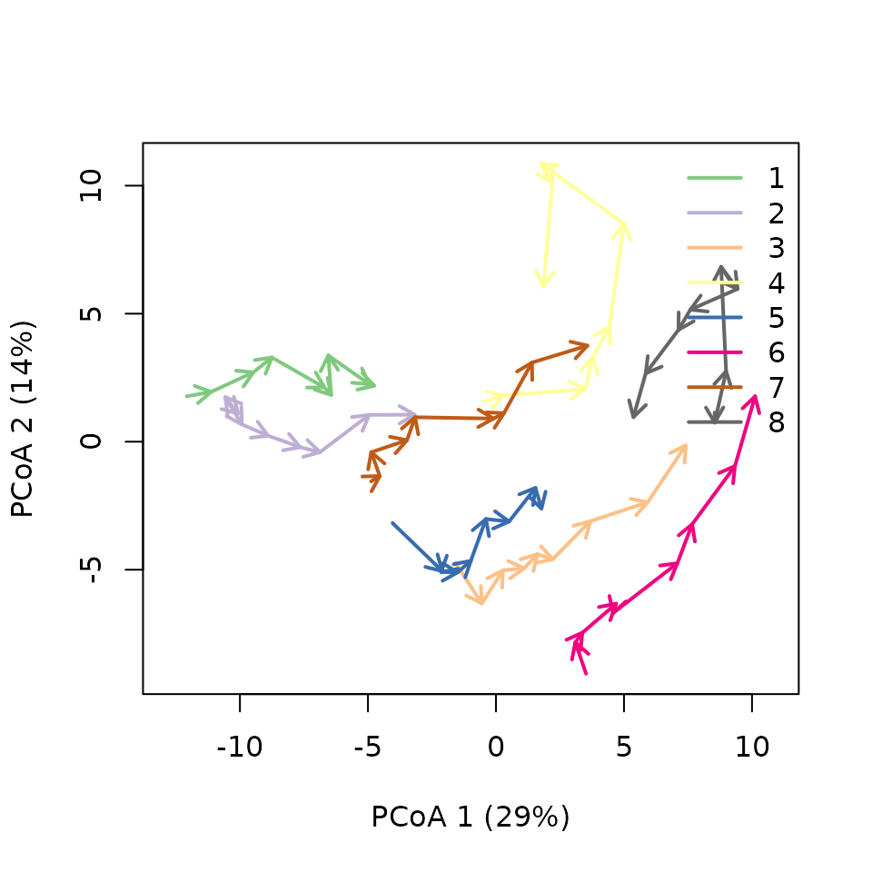
Note that in this case, the full
includes more than two dimensions, and PCoA is representing 43% of total
variance (correction for negative eigenvalues is included in the call to
cmdscale from trajectoryPCoA()), so one has to
be careful when interpreting trajectories visually.
Another option is to use mMDS to represent trajectories, which in this case produces a similar result:
mMDS <- smacof::mds(avoca_D_man)
mMDS##
## Call:
## smacof::mds(delta = avoca_D_man)
##
## Model: Symmetric SMACOF
## Number of objects: 72
## Stress-1 value: 0.114
## Number of iterations: 49
trajectoryPlot(mMDS$conf, avoca_sites, avoca_surveys,
traj.colors = RColorBrewer::brewer.pal(8,"Accent"),
axes=c(1,2), length=0.1, lwd=2)
legend("topright", bty="n", legend = 1:8, col = RColorBrewer::brewer.pal(8,"Accent"), lwd=2)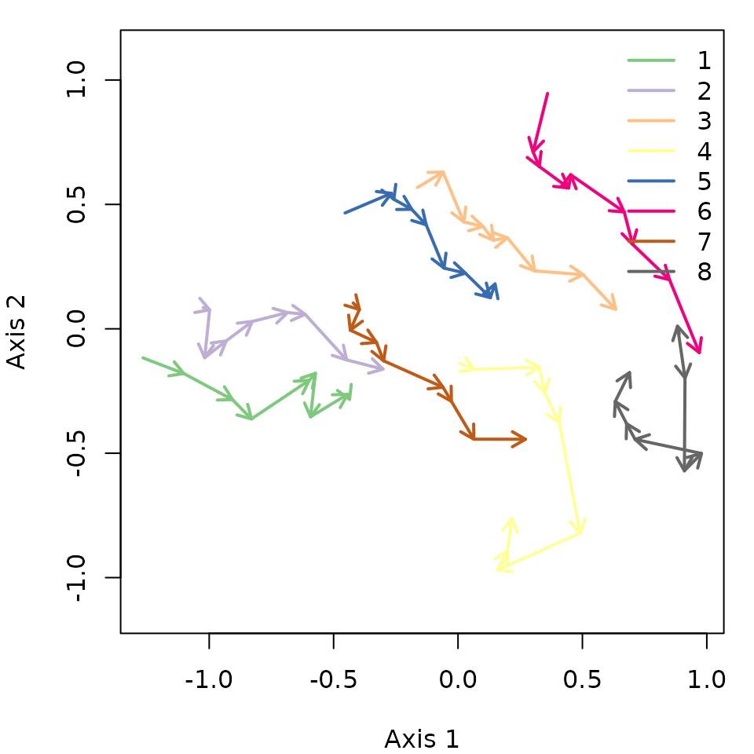
One can inspect specific trajectories using
subsetTrajectories(). This allows getting a better view of
particular trajectories, here that of forest plot ‘3’:
oldpar <- par(mfrow=c(1,2))
trajectoryPCoA(subsetTrajectories(avoca_x, "3"),
length=0.1, lwd=2, time.labels = TRUE)
plotTrajDiamDist(3)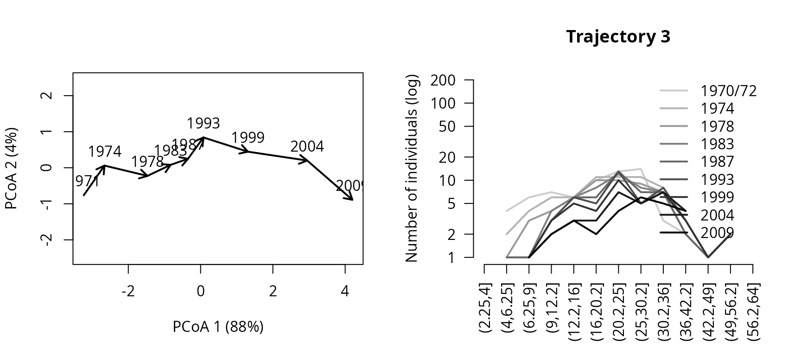
par(oldpar)In the right hand, we added a representation of the change in the mountain beech tree diameter distribution through time for trajectory of forest plot ‘3’. The dynamics of this plot include mostly growth, which results in individuals moving from one diameter class to the other. The whole trajectory looks mostly directional. Let’s now inspect the trajectory of forest plot ‘4’:
oldpar <- par(mfrow=c(1,2))
trajectoryPCoA(subsetTrajectories(avoca_x, "4"),
length=0.1, lwd=2, time.labels = TRUE)
plotTrajDiamDist(4)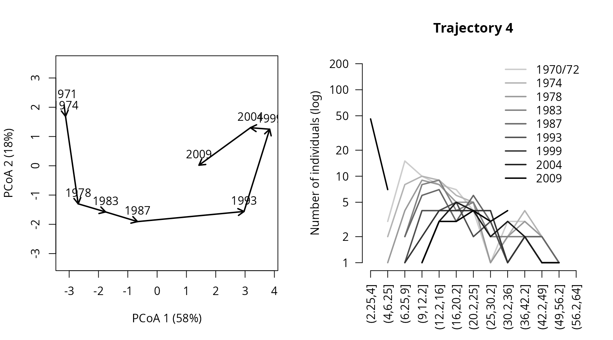
par(oldpar)This second trajectory is less straight and seems to include a turn by the end of the sampling period, corresponding to the recruitment of new saplings.
5.3 Trajectory lengths, angles and overall directionality
While trajectory lengths and angles can be inspected visually in
ordination diagrams, it is better to calculate them using the full
space (i.e., from matrix avoca_D_man). Using function
trajectoryLengths() we can see that the trajectory of
forest plot ‘4’ is lengthier than that of plot ‘3’, mostly because
includes a lengthier last segment (i.e. the recruitment of new
individuals):
trajectoryLengths(avoca_x)## S1 S2 S3 S4 S5 S6 S7
## 1 1.2173214 1.5911988 1.0976965 2.1173501 0.5238760 1.5863283 1.5750365
## 2 0.5971165 1.7469687 0.9866591 0.9413060 1.3687614 0.6280231 1.4565581
## 3 1.1480971 1.2404953 0.6508116 0.4371405 0.5098385 1.2078811 1.6241741
## 4 0.7932307 1.8572629 0.7268623 0.8348635 3.0560437 1.9863939 0.9905892
## 5 1.7769875 0.3367341 0.7283030 0.6515714 1.2660552 0.9544933 1.2605333
## 6 2.1891568 0.5312711 1.0035212 0.4113220 2.1394743 1.0482871 1.4924056
## 7 0.2919002 0.8857645 1.0908604 0.5601649 2.0600208 0.3712067 1.1014563
## 8 0.1909713 1.2000266 2.3211891 0.6539882 2.7807668 0.8170202 1.2072425
## S8 Path
## 1 0.6277940 10.336602
## 2 1.1232798 8.848673
## 3 1.4536390 8.272077
## 4 3.8794520 14.124698
## 5 0.5842314 7.558909
## 6 1.9623777 10.777816
## 7 1.7518489 8.113223
## 8 1.5107357 10.681940If we calculate the angles between consecutive segments (using
function trajectoryLengths) we see that indeed the
trajectory of ‘3’ is rather directional, but the angles of trajectory of
‘4’ are larger, on aveerage:
avoca_ang <- trajectoryAngles(avoca_x)
avoca_ang## S1-S2 S2-S3 S3-S4 S4-S5 S5-S6 S6-S7
## 1 41.74809 8.669806e+01 7.401875e+01 26.94138 113.40657 100.67068
## 2 68.14891 3.466506e+01 8.537736e-07 0.00000 25.97111 0.00000
## 3 87.24519 3.088828e+01 1.207418e-06 0.00000 50.90743 48.12854
## 4 37.65736 8.537736e-07 8.537736e-07 36.25240 55.53607 74.21065
## 5 42.02156 7.166400e+01 1.207418e-06 49.95436 65.75897 65.82083
## 6 41.69894 4.611675e+01 5.669641e+01 135.84929 0.00000 0.00000
## 7 53.63254 1.152378e+02 6.519921e+01 60.71442 0.00000 56.25733
## 8 180.00000 0.000000e+00 9.213121e+01 132.36445 71.33948 36.43189
## S7-S8 mean sd rho
## 1 1.021996e+02 78.82477 0.5334615 0.8673692
## 2 1.207418e-06 17.61550 0.4257423 0.9133572
## 3 4.568199e+01 37.39925 0.5018798 0.8816663
## 4 4.980332e+01 36.44717 0.4531030 0.9024417
## 5 1.061250e+02 57.89321 0.5239476 0.8717431
## 6 0.000000e+00 34.34150 0.7777287 0.7390195
## 7 1.207418e-06 49.96352 0.6562139 0.8062928
## 8 1.207418e-06 66.68343 1.1601974 0.5101610By calling function trajectoryDirectionality() we can
confirm that the trajectory for forest plot ‘4’ is less straight than
that of plot ‘3’:
avoca_dir <- trajectoryDirectionality(avoca_x)
avoca_dir## 1 2 3 4 5 6 7 8
## 0.6781369 0.6736490 0.8651467 0.5122482 0.6677116 0.7058465 0.7391775 0.5254225The following code displays the relationship between the statistic in
trajectoryDirectionality() and the mean resultant vector
length that uses angular information only and assesses the constancy of
angle values:
avoca_rho <- trajectoryAngles(avoca_x, all=TRUE)$rho
plot(avoca_rho, avoca_dir, xlab = "rho(T)", ylab = "dir(T)", type="n")
text(avoca_rho, avoca_dir, as.character(1:8))5.4 Convergence between trajectories
We may ask if structure in forest plots is becoming more similar with time. This question can be addressed using an overall test of convergence, which we can do because trajectories are synchronous:
trajectoryConvergence(avoca_x, type="multiple")## $tau
## [1] -0.8333333
##
## $p.value
## [1] 0.002499029In this case we obtain that tau is decreasing and the test is significant, which indicates that forest structures are overall converging. This general trend may not be true for specific pairs of plots. Converge/divergence between pairs of plots would be assessed using:
trajectoryConvergence(avoca_x, type="pairwise.symmetric")## $tau
## 1 2 3 4 5 6
## 1 NA -0.05555556 -0.4444444 -0.4444444 -0.4444444 -0.4444444
## 2 -0.05555556 NA -0.3888889 0.1111111 -0.3333333 -0.3888889
## 3 -0.44444445 -0.38888890 NA 0.4444444 -0.1111111 -0.6666667
## 4 -0.44444445 0.11111111 0.4444444 NA 0.6111111 0.2777778
## 5 -0.44444445 -0.33333334 -0.1111111 0.6111111 NA 0.4444444
## 6 -0.44444445 -0.38888890 -0.6666667 0.2777778 0.4444444 NA
## 7 -0.05555556 -0.33333334 -0.3888889 0.4444444 0.1666667 -0.7777778
## 8 -0.94444442 -0.83333331 -0.6666667 -0.4444444 -0.5555556 -0.5555556
## 7 8
## 1 -0.05555556 -0.9444444
## 2 -0.33333334 -0.8333333
## 3 -0.38888890 -0.6666667
## 4 0.44444445 -0.4444444
## 5 0.16666667 -0.5555556
## 6 -0.77777779 -0.5555556
## 7 NA -0.5000000
## 8 -0.50000000 NA
##
## $p.value
## 1 2 3 4 5 6
## 1 NA 0.916965246 0.11785091 0.11785091 0.11785091 0.117850907
## 2 0.916965246 NA 0.17530808 0.75445414 0.25145215 0.175308079
## 3 0.117850907 0.175308079 NA 0.11785090 0.75445420 0.016488666
## 4 0.117850907 0.754454136 0.11785090 NA 0.02856767 0.348082542
## 5 0.117850907 0.251452148 0.75445420 0.02856767 NA 0.117850900
## 6 0.117850907 0.175308079 0.01648867 0.34808254 0.11785090 NA
## 7 0.916965246 0.251452148 0.17530808 0.11785090 0.60216761 0.004878566
## 8 0.000580667 0.002499029 0.01648867 0.11785091 0.04760397 0.047603969
## 7 8
## 1 0.916965246 0.000580667
## 2 0.251452148 0.002499029
## 3 0.175308079 0.016488666
## 4 0.117850900 0.117850907
## 5 0.602167606 0.047603969
## 6 0.004878566 0.047603969
## 7 NA 0.076332748
## 8 0.076332748 NAInspecting these results we can conclude that several pairs of plots are significantly converging (notably with plot ‘8’), but there is also a significant divergence between plots ‘4’ and ‘5’. We can display this divergence graphically using:
trajectoryPCoA(subsetTrajectories(avoca_x, c("4", "5")),
traj.colors = RColorBrewer::brewer.pal(8,"Accent")[4:5],
axes=c(1,2), length=0.1, lwd=2)
legend("topright", bty="n", legend = 4:5, col = RColorBrewer::brewer.pal(8,"Accent")[4:5], lwd=2)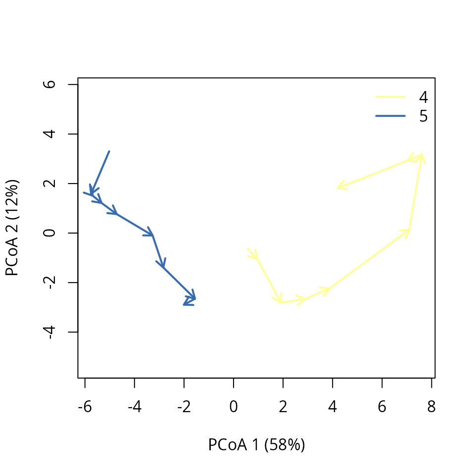
To interpret this result we can compare the corresponding changes in diameter distribution:
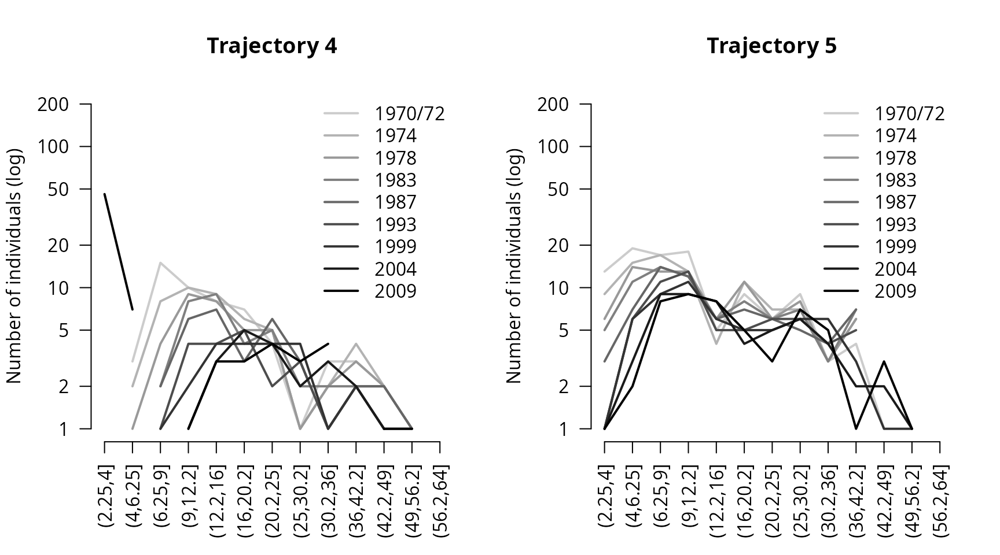
par(oldpar)Apparently, the divergence would be explained by the fact that while plot ‘4’ evolves towards a more regular structure of medium/large trees (i.e. from more diverse tree size distribution towards less diverse one), plot ‘5’ maintains an irregular structure (i.e. diverse tree size distribution) throughout the years thanks to a greater sapling ingrowth.
5.5 Distances between trajectories
We can calculate the resemblance between forest plot trajectories
using trajectoryDistances():
avoca_D_traj_man <- trajectoryDistances(avoca_x, distance.type="DSPD")
print(round(avoca_D_traj_man,3))## 1 2 3 4 5 6 7
## 2 2.405
## 3 6.805 5.773
## 4 6.123 6.646 5.225
## 5 6.020 5.541 3.235 4.966
## 6 9.490 8.866 3.436 6.043 4.505
## 7 4.024 3.291 4.365 4.993 4.389 6.205
## 8 9.797 9.747 5.591 4.611 6.383 5.043 6.949The closest trajectories are those of plots ‘1’ and ‘2’. They looked rather close in position in the PCoA ordination of with all trajectories, so probably it is position, rather than shape which has influenced this low value. The next pair of similar trajectories are those of the ‘3’-‘5’ pair. We can again use mMDS to produce an ordination of resemblances between trajectories:
mMDS<-smacof::mds(avoca_D_traj_man)
mMDS##
## Call:
## smacof::mds(delta = avoca_D_traj_man)
##
## Model: Symmetric SMACOF
## Number of objects: 8
## Stress-1 value: 0.091
## Number of iterations: 25
x<-mMDS$conf[,1]
y<-mMDS$conf[,2]
plot(x,y, type="p", asp=1, xlab=paste0("Axis 1"),
ylab=paste0("Axis 2"), col="black",
bg= RColorBrewer::brewer.pal(8,"Accent"), pch=21)
text(x,y, labels=1:8, pos=1)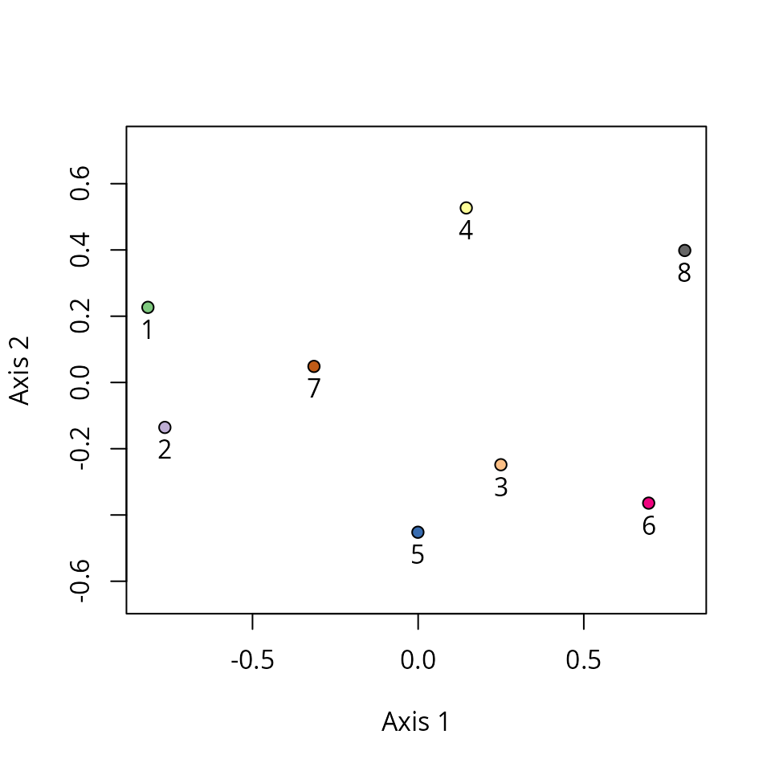
5.6 Dynamic variation
To determine which forest plots have more unique structural dynamics,
we can use function dynamicVariation():
dynamicVariation(avoca_x, distance.type="DSPD")## $dynamic_ss
## [1] 127.5603
##
## $dynamic_variance
## [1] 18.2229
##
## $relative_contributions
## 1 2 3 4 5 6 7
## 0.19647629 0.16743851 0.05093440 0.08698905 0.05371379 0.17015568 0.04851269
## 8
## 0.22577959We see that forest plots ‘3’, ‘4’, ‘5’ and ‘7’ contribute much less to overall variation in dynamics than the others. These plots are the same that were located closer to the center of the previous ordination plot. The more unique plot is ‘8’, which we can isolate and inspect using:
oldpar <- par(mfrow=c(1,2))
trajectoryPCoA(subsetTrajectories(avoca_x, "8"),
length=0.1, lwd=2, time.labels = TRUE)
plotTrajDiamDist(8)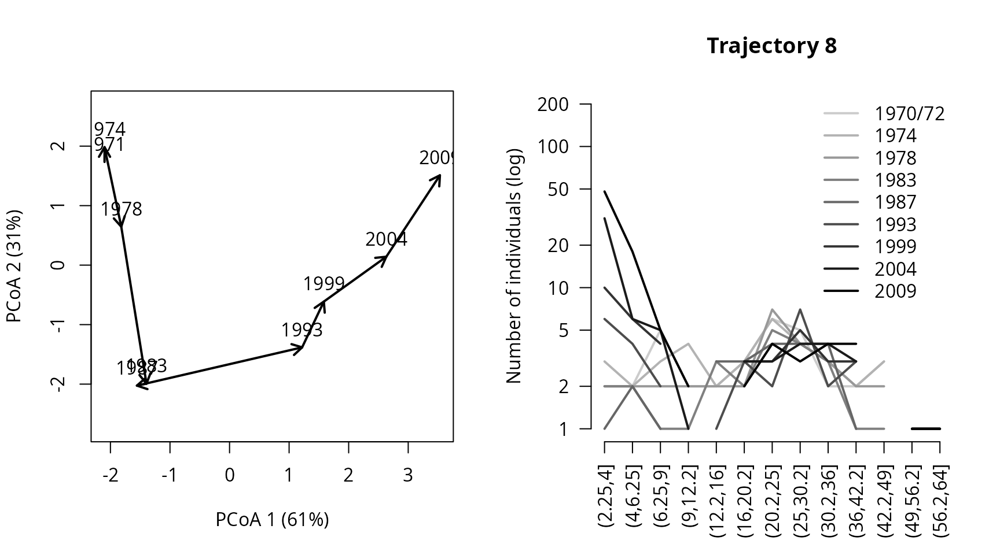
par(oldpar)Apparently, the distinctiveness of plot ‘8’ from the remaining stems from its very low number of trees at the beginning and the large amount of regeneration. This structural dynamics would be rather different from that of other plots that have more adults in the beginning and less amount of regeneration.
6. References
Besse, P., Guillouet, B., Loubes, J.-M. & François, R. (2016). Review and perspective for distance based trajectory clustering. IEEE Trans. Intell. Transp. Syst., 17, 3306–3317.
De Cáceres M, Coll L, Legendre P, Allen RB, Wiser SK, Fortin MJ, Condit R & Hubbell S. (2019). Trajectory analysis in community ecology. Ecological Monographs 89, e01350.
Sturbois, A., De Cáceres, M., Sánchez-Pinillos, M., Schaal, G., Gauthier, O., Le Mao, P., Ponsero, A., & Desroy, N. (2021a). Extending community trajectory analysis : New metrics and representation. Ecological Modelling 440: 109400. https://doi.org/10.1016/j.ecolmodel.2020.109400.
Sturbois, A., Cucherousset, J., De Cáceres, M., Desroy, N., Riera, P., Carpentier, A., Quillien, N., Grall, J., Espinasse, B., Cherel, Y., Schaal, G. (2021b). Stable Isotope Trajectory Analysis (SITA) : A new approach to quantify and visualize dynamics in stable isotope studies. Ecological Monographs, 92, e1501. https://doi.org/10.1002/ecm.1501.